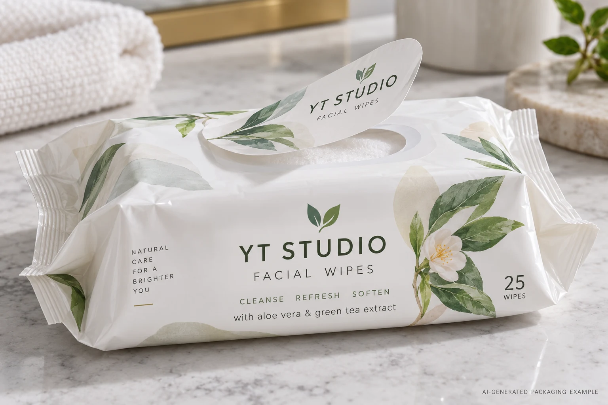
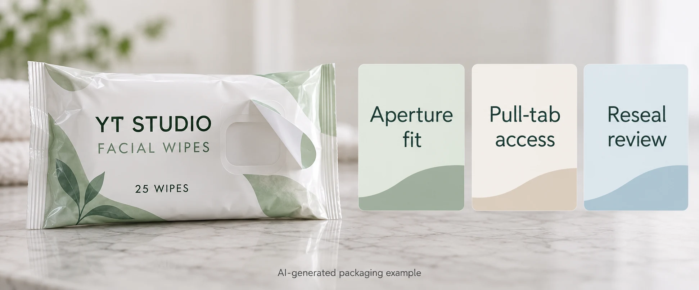

A facial-wipe pouch needs a branded flap over its opening. The artwork team treats it as another oval sticker. The packaging team expects it to open repeatedly and reseal. Those expectations describe a functional closure, not simply a decorative label placed on a flexible pack.
Specify the opening, pull area, pack surface and actual contents before selecting a wet-wipe reclosure label. Agree how the repeated opening and resealing function will be assessed on the assembled pack. A neat first application does not establish that continuing function.

Keep the closure job separate from the branding job
A sidewall label on a rigid tub can carry product identity while a mechanical lid closes the pack. A soft pouch may instead rely on a peel-and-reseal component. Our wipes-tub guide makes that distinction; the reclosure request needs its own functional brief.
Ask which component creates the opening and which part is expected to remain attached during use. Identify the aperture, any retained hinge area, pull-tab arrangement and the intended closing action. A decorative oval drawn without those references can miss the part the user needs to grip.
Also separate any first-opening indication from ongoing resealing. Neither function should be assumed from the other. If the project needs both, the relevant packaging parties should explain the proposed arrangement and how each function will be evaluated.
Identify the pouch surface and the fluid
Avery Dennison's reclosure portfolio links adhesive selection to pack contents and the labeling surface. It is a supplier-specific example of why the functional brief needs both. Its listed product claims, order minimums and lead times are not terms for a YT Labels project.
Provide the actual pouch-film structure or relevant surface specification, printed or coated condition and filling arrangement. Identify the wipe formulation through the responsible technical team. A general phrase such as water based does not necessarily describe every substance a reclosure encounters.
Have the packaging and material specialists decide what compatibility information is needed and what can be shared appropriately. This guide does not recommend exposing samples to improvised chemicals or using a generic material claim as proof for the actual filled product.
Make the opening geometry checkable
Request a drawing showing the reclosure, opening and pull area in one coordinate reference. Keep the pouch seams, folds and fill shape visible. Assess whether a user can identify and grip the intended part without disturbing an unrelated seal.
Use representative filled packs to review the handling task. An empty flat pouch can make the area look easier to operate than the actual object. Record the orientation and condition used for the review, including any relevant difference between early and later pack use.
Do not prescribe a universal flap size, overlap or opening count from another product. These need to be agreed for the actual construction and use. A decision record should show which requirement was chosen and who owns acceptance.
Use a reclosure qualification card
| Input | Record | Question before release |
|---|---|---|
| Pack and contents | Film reference, surface condition, fill and responsible technical owner | Does the candidate represent the actual contact? |
| Geometry | Aperture, flap, pull area, retained region and pouch seams | Is the intended opening usable? |
| Construction | Named face, adhesive, print and finish | Which finished component is being proposed? |
| Function review | Agreed method, opening sequence and relevant conditions | What evidence supports repeated use? |
| Release | Acceptance owner, results and unexamined conditions | What remains pending? |
Complete the pack and drawing inputs, identify the proposed construction and have the competent parties agree the review method and acceptance conditions. Record observations under that method, including the user's grip, opening behavior and closing result. Keep the evidence tied to the exact sample.

Do not infer retained moisture from appearance
A flap looking closed in a photograph does not quantify the pack's retention performance. If that outcome matters, ask the packaging specialists to define the required assessment and evidence. This article supplies no moisture-loss allowance, shelf-life promise or microbiological conclusion.
Likewise, an adhesive remaining on the pouch does not establish an acceptable opening force or a convenient closing action. Define the relevant functions separately. A report can support one while leaving another unexamined.
Let the alternative pack remain an option
A hypothetical short-use pouch may support a defined peel-and-reseal arrangement after its actual requirements are assessed. Another product may use a mechanical closure or a different pack format where the intended use calls for it. A decorative label should not be asked to substitute for a closure it was never specified to be.
Stop release if the actual film or contents are unidentified, the aperture drawing is unresolved or the proposed sample cannot support the agreed function. Ask the relevant packaging and material parties to close those gaps before treating the artwork as a production approval.
For a personal-care label inquiry, provide the pack drawing, filled reference, approved copy, quantity, proposed function and specialist construction information. Confirm which parts of the reclosure project the suppliers can currently support; a branding-label service description is not a verified closure qualification service.
Prepare the request with the inquiry form, then send supporting files by email or WhatsApp. The form does not upload attachments. Request an acknowledged functional proposal before approving the decorative layout alone.